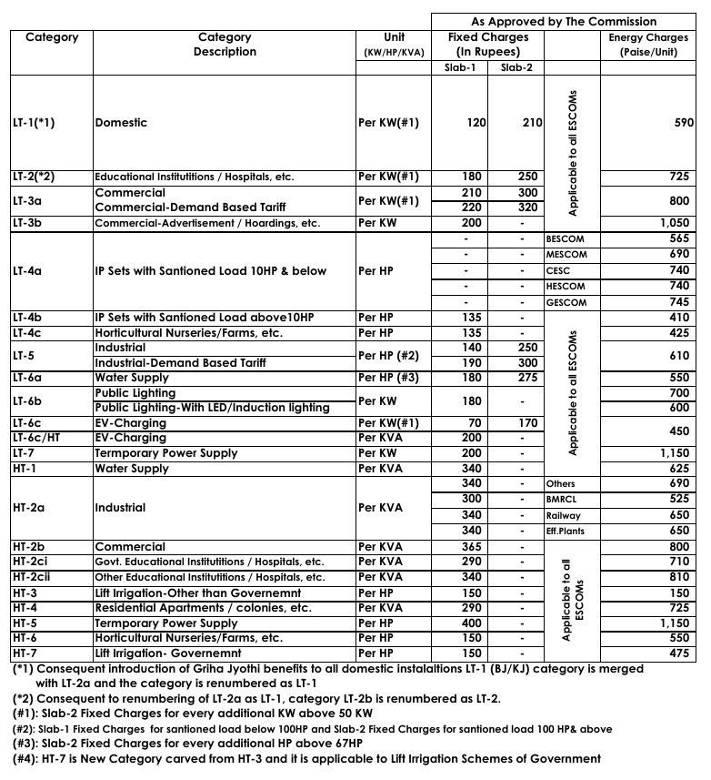
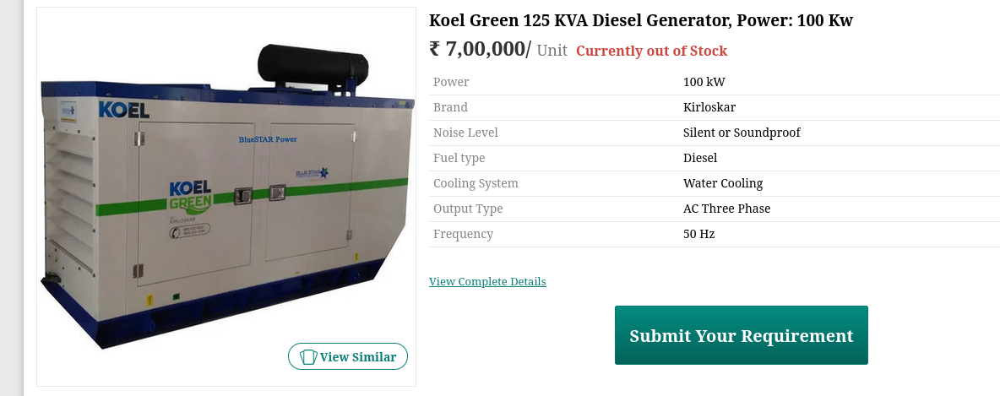
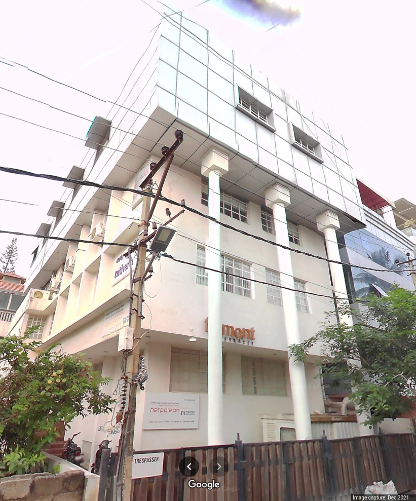

Power of Micro Data Centers¶
Author: Sasank Chilamkurthy
I have had the good fortune of being an author of policy note about micro data centers (MDC). The paper was led by EkStep foundation, the same folks behind UPI, ONDC and other such spectacularly successful projects. Micro data centers, as name suggests, is a small scale data center in about 50 KW to 300 KW power range. They can be a viable alternative to centralized mega data centers which can guzzle up to 10,000 KW or more power.
In this post, I want to explain power engineering characteristics of micro data centers. After all, I am an electrical engineer trained at IITB! Many of my friends and family are also into Electrical Engineering. For example, my school/college classmate is now a managing director for Andhra Pradesh’s power distribution company. These power distribution companies are called DISCOMs for short. I spoke to DISCOM engineers and more about micro data centers.
Besides, I am looking to setup one such micro data center myself. So, I do have skin in the game about what I am talking. So let’s go about this!
Data Center Infrastructure¶
Data centers traditionally are measured in terms of how much power is consumed by the them. This makes sense because reliable power tends to be the biggest factor in setting them up. How so?
Computers in data centers need to be turned on all the time. They can’t be powered down because remote users using computers might experience service outages. Almost every application you use these days are run from a data center. This includes Whatsapp, Google, Slack and what not. Computers configured this way are called servers.
So, we need uninterrupted power supply! How much uninterrupted power do we need? We can measure this in terms of number of Nvidia H100s you want to put in your data center. As a thumb rule, We can budget roughly 1 KW per a H100 GPU. So with 100 KW, we can host about 100 H100 GPUs. A 1000 GPU cluster will then require 1000 KW or 1 MW.
How do we go about getting 100 KW of uninterrupted power? Firstly, we need to get power connection from DISCOM rated for that load. Secondly, we need to have local backup power source – usually a diesel generator.
Power Connection¶
Let’s talk about DISCOM power connection. There are two sort of power connections you can get for this sort of load: LT for low tension and HT for high tension. LT is the default connection we get in our apartments and homes. Many shops and commercial establishments also opt for it if their power requirements are not too high (<100 KW). HT is the connection you’d get if you have a lot of power requirements.
From the overall power infrastructure point of view, HT and LT are not too different. In LT, your DISCOM maintains/installs the step down transformers from high voltage transmission lines to convert to normal 220V socket. This transformer, owned by the DISCOM, supplies to multiple LT power connections. In HT on the other hand, you directly get the high voltage line and maintaining/installing step down transformer is your problem. As you can guess from this description, HT is for higher wattage requirements and is more reliable.
Let’s do some math for power bill of a 100 KW data center. We’ll assume you have taken HT-2B connection and gotten yourself a transformer. I have taken the following image of tariffs from Karnataka’s electricity regulatory commission.

There are two sections in this: fixed charges and energy charges. Fixed charges is what you pay per month for total load you have taken. For 100 KW, that will be 365 INR/KW * 100 KW = 36,500 INR. Next we have energy charges. Let’s assume we do 50% of capacity utilization i.e. on average we consume 50% of peak load. So that gives us 100 KW * 50% * 24 hours * 30 days / month = 36000 KWh or units. That comes down to 8.00 INR/unit * 36000 units = 2,88,000 INR. So your total monthly bill is about INR 3,24,500. To keep this number in perspective, you pay about INR 7,00,000 for renting one H100 GPU on AWS!
Backup Power¶
Well, we can’t rely on grid power for 100% uninterrupted power. LT connections are particularly unreliable because transformer is shared across multiple connections. Any maintenance on any one of these connections will make you go down. Most common reason for LT interruption in Bangalore is tree fall during a storm on one of the overhead LT lines. HT interruptions are less common because HT lines are almost always underground – at least here in Bangalore.
So we need to have alternate power source. Usually this is a diesel generator because it is highly economical. A 100 KW generator costs under 10,00,000 INR. It costs about INR 24 per unit/KWH of energy because we need to put in diesel. When power is interrupted, our diesel generator needs to automatically kick in.

Even as diesel generator starts automatically on power loss, it usually takes about 2-3 minutes to start. We can’t afford to have down time even for that. So we need to install a battery pack, usually of a lead acid chemistry, rated to hold the 100 KW power for about 15 minutes. This also turns out to be fairly cheap under 5,00,000.
Real Estate¶
Well we need a space to keep all this hardware: transformer, batteries, generator and the computers! Surprisingly this is the easiest part about data center. We don’t need particularly large space. For transformer and generator rated for 100 KW, we’ll require about 200 sqft of space in cellar of the building. For computers/servers themselves we don’t need more than 1000 sqft of space. Overall, a structure built on a 1000 sqft plot can easily handle 100 KW micro data center!
Underappreciated aspect of real estate is availability of talent. You might find this piece of land for very cheap if you go out of a city. However it’ll be hard to get good talent in such a location. These servers require a lot of manpower to maintain – both hardware and software. Separating hardware from software teams has proven to be a bad choice in my experience.
To make it real, here’s a pic of building with 100 KW connection and generator to go with it. This is an office space in Indiranagar. You can see generator in the cellar corner. A floor in this will be more than enough for a 100 KW micro data center.

Why Micro Data Centers?¶
Now that we understood the infrastructure requirements of a data center, I will now make a case for Micro Data Center ~ 100 KW capacity as opposed to a Mega Data Center with > 1 MW capacity.
Reliable¶
As we spoke earlier, data centers are mainly dependent on power infrastructure. As we increase the wattage requirement, reliably supplying and maintaining that much power to a single location becomes very difficult. It’s much easier to supply 100 KW to 100 different locations as opposed to supply 100 * 100 = 10 MW to a single location.
This is primarily because DISCOM network is built to distribute a lot of power but in a geographically distributed manner. In Karnataka alone, total power supply distributed is roughly 17 GW! That’s 17,000 MW. So 10 MW, even 100 MW, in aggregate is not much of a concern to them. However supplying 10 MW of reliable power to a single location requires a lot of infrastructure investment from DISCOM.
Another factor comes from the math of probability. Two independent 100 KW micro data centers in a ‘grid’ is more reliable than single 200 KW data center. This is because one data center can act as failover for second one as opposed to complete blackout. This is the reason even mega data centers are constructed with ‘availability’ zones.
Cheap¶
It’s much cheaper to build a 100 KW data center than a 10 MW data center. This is obviously because the power infra costs scale super linearly. This means an entrepreneur can aspire to build a micro data center. On the other hand, mega data centers are possible only for deep pocketed corporations like Amazon or Microsoft. This lower barrier to entry allows more supply to the market. This allows for more market based mechanisms to operate as opposed to oligopoly we are in today.
Conclusion¶
In this post, we have seen the power infrastructure requirements of a data center. We have understood that data centers require uninterrupted power supply and what it takes to achieve that. We have also seen how it is hard to scale power to a single location as opposed to distributed manner. This makes micro data centers with 100 KW sort of capacities particularly attractive.
Published: 23/09/2024